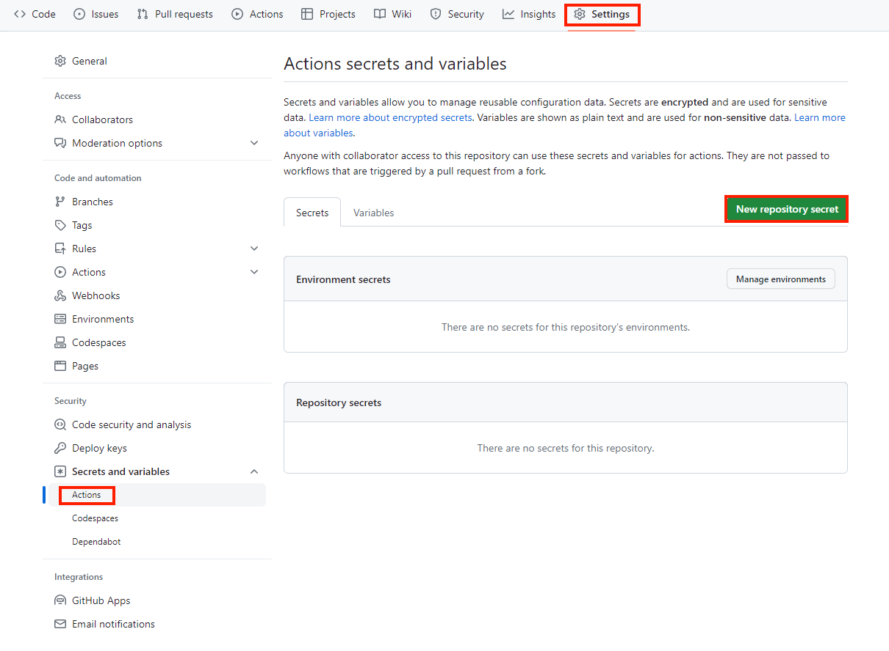

Sphinx導入とGitHubページ作成
Sphinxのインストール（Windows）
公式ドキュメントを参考にする。
本手順ではすでにPythonがインストールされていることを前提とした手順をメモする
コマンドプロンプトを起動して、Pythonがインストールされていることを確認する
C:\Users\masak>python --version
Python 3.11.4
pipコマンドでSphinxインストール
C:\Users\masak>pip install -U sphinx
インストールされたことを確認
C:\Users\masak>sphinx-build --version
sphinx-build 7.2.6
Sphinxプロジェクトの作成とテーマの適用
プロジェクトを作成したい任意のディレクトリで、プロジェクトを作成
C:\Users\masak\ドキュメント\noimemo>sphinx-quickstart
Welcome to the Sphinx 7.2.6 quickstart utility.
Please enter values for the following settings (just press Enter to
accept a default value, if one is given in brackets).
Selected root path: .
You have two options for placing the build directory for Sphinx output.
Either, you use a directory "_build" within the root path, or you separate
"source" and "build" directories within the root path.
> Separate source and build directories (y/n) [n]: y
The project name will occur in several places in the built documentation.
> Project name: noimemo
> Author name(s): noim
> Project release []:
If the documents are to be written in a language other than English,
you can select a language here by its language code. Sphinx will then
translate text that it generates into that language.
For a list of supported codes, see
https://www.sphinx-doc.org/en/master/usage/configuration.html#confval-language.
> Project language [en]: ja
Creating file C:\Users\masak\ドキュメント\noimemo\source\conf.py.
Creating file C:\Users\masak\ドキュメント\noimemo\source\index.rst.
Creating file C:\Users\masak\ドキュメント\noimemo\Makefile.
Creating file C:\Users\masak\ドキュメント\noimemo\make.bat.
Finished: An initial directory structure has been created.
You should now populate your master file C:\Users\masak\ドキュメント\noimemo\source\index.rst and create other documentation
source files. Use the Makefile to build the docs, like so:
make builder
where "builder" is one of the supported builders, e.g. html, latex or linkcheck.
こんな感じのファイルが生成される
Sphinxの拡張テーマ（sphinx_rtd_theme）をインストール
pip install sphinx_rtd_theme
拡張テーマ適用のため、
source > conf.pyファイルのhtml_themeオプションを選択
# -- Options for HTML output -------------------------------------------------
# https://www.sphinx-doc.org/en/master/usage/configuration.html#options-for-html-output
html_theme = 'sphinx_rtd_theme'
後述するGithubページへの適用のため、
docsフォルダの作成および、ビルドのディレクトリ構成を変更する。make.batのBUILDDIRを変更する。
※ make.batファイルはWindows環境でビルドするためのバッチファイルのため、今回はこちらを編集する。MakefileはLinux環境でビルドするためのファイル。
C:\Users\masak\ドキュメント\noimemo>tree /f
フォルダー パスの一覧
ボリューム シリアル番号は A0DF-CFEF です
C:.
│ make.bat
│ Makefile
│
├─build
├─docs # 新規作成
└─source
│ conf.py
│ index.rst
│
├─_static
└─_templates
@ECHO OFF
pushd %~dp0
REM Command file for Sphinx documentation
if "%SPHINXBUILD%" == "" (
set SPHINXBUILD=sphinx-build
)
set SOURCEDIR=source
set BUILDDIR=docs # 編集
%SPHINXBUILD% >NUL 2>NUL
if errorlevel 9009 (
echo.
echo.The 'sphinx-build' command was not found. Make sure you have Sphinx
echo.installed, then set the SPHINXBUILD environment variable to point
echo.to the full path of the 'sphinx-build' executable. Alternatively you
echo.may add the Sphinx directory to PATH.
echo.
echo.If you don't have Sphinx installed, grab it from
echo.https://www.sphinx-doc.org/
exit /b 1
)
if "%1" == "" goto help
%SPHINXBUILD% -b %1 %SOURCEDIR% %BUILDDIR% %SPHINXOPTS% %O% # 編集
goto end
:help
%SPHINXBUILD% -M help %SOURCEDIR% %BUILDDIR% %SPHINXOPTS% %O%
:end
popd
GitHub Pagesはサイトをビルドするのにデフォルトで
Jekyllを利用するが、この場合、_staticや_imagesフォルダが認識されなくなってしまう。そこで、Sphinxのconf.pyに以下の設定を追記する。
extensions = [
"sphinx.ext.githubpages",
]
これにより、空ファイル.nojekyllが自動生成されるため、CSSや画像がうまく適用される。
GitHub Pageの作成
GitHubでGitHubPages用のリポジトリを作成する。

Shpinxディレクトリに移動し、1で作成したリポジトリに記載のコマンドラインを実行する。
echo "# noimemo" >> README.md
git init
git add README.md
git commit -m "first commit"
git branch -M main
git remote add origin https://github.com/noimasaki/noimemo.git
git push -u origin main
Shpinxの他ファイル追加してプッシュする
git add .
git commit -m "add shpinx files"
git push origin main
GitHubで
Settings > Pagesを選択し、GitHub Pagesで公開するBranch（main）と、ビルドされたリソースが格納されたディレクトリ（docs）を設定してSaveする。
記事の執筆
sourceフォルダ配下にmdファイル、もしくはrstファイルで記事を執筆する。
conf.pyに追加したファイルを追加する。
Spinxのビルド & GitHub Pagesの確認
Shinxディレクトリにてビルドを実施
C:\Users\masak\ドキュメント\noimemo>make html
Running Sphinx v7.2.6
loading translations [ja]... done
making output directory... done
building [mo]: targets for 0 po files that are out of date
writing output...
building [html]: targets for 1 source files that are out of date
updating environment: [new config] 1 added, 0 changed, 0 removed
reading sources... [100%] index
looking for now-outdated files... none found
pickling environment... done
checking consistency... done
preparing documents... done
copying assets... copying static files... done
copying extra files... done
done
writing output... [100%] index
generating indices... genindex done
writing additional pages... search done
dumping search index in Japanese (code: ja)... done
dumping object inventory... done
build succeeded.
The HTML pages are in build\html.
Gitでコミット&プッシュする
GitHub Pagesの確認
https://GitHubのアカウント名.github.io/リポジトリ名/で確認。
今回の場合は以下のURLとなる
GitHub Actionでビルドを自動化する
GitHub Actionでは
.github/workflows配下にYAMLファイルで定義する必要がある。以下のように作成する。
yamlファイル
パーソナルアクセストークンの作成 今回つくるワークフローではGitHub Actionsがリポジトリにpushするというjobが必要なため、パーソナルアクセストークンを作成し、トークンをGitHub Actions Secretsに追加する必要がある。
Settings > Secrets and variables > Actions > New repository secret
から、新しいシークレットを作成する。 
Name: 任意の名前（MY_GITHUBACTIONS_SECRET）
Secret: パスフレーズ
Shpinxにおけるmarkdown
下記を参照 (https://myst-parser.readthedocs.io/en/latest/index.html)[https://myst-parser.readthedocs.io/en/latest/index.html]